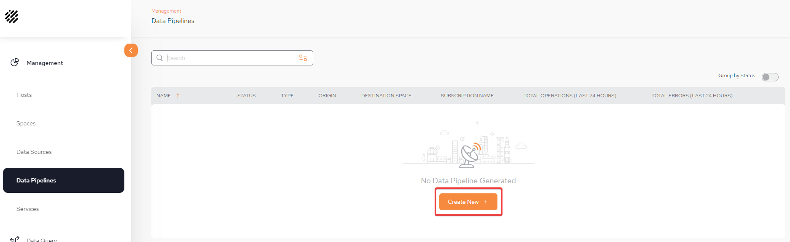
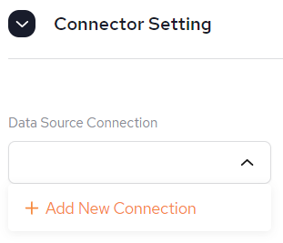
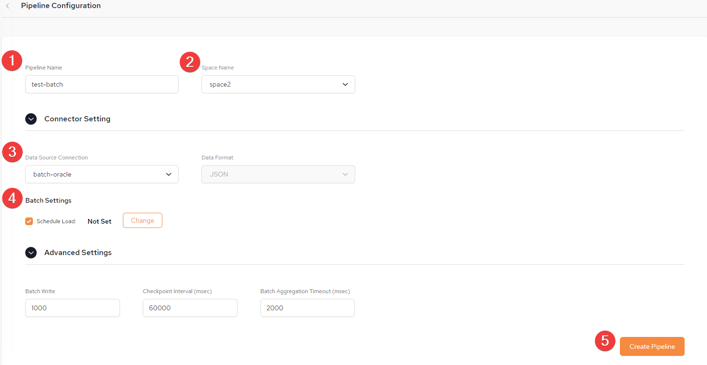
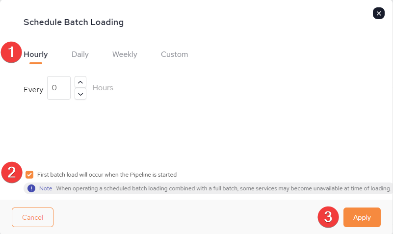
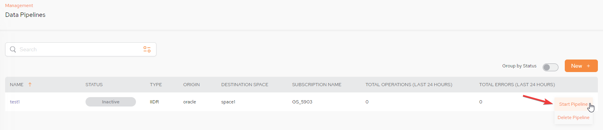
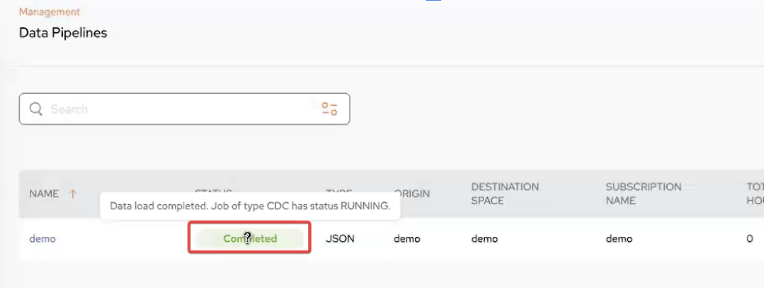
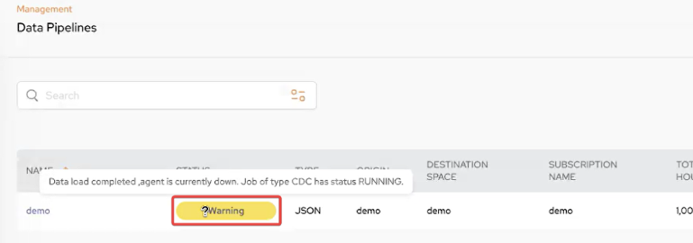
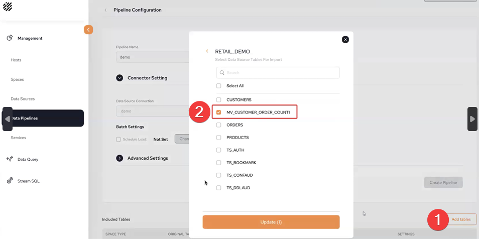
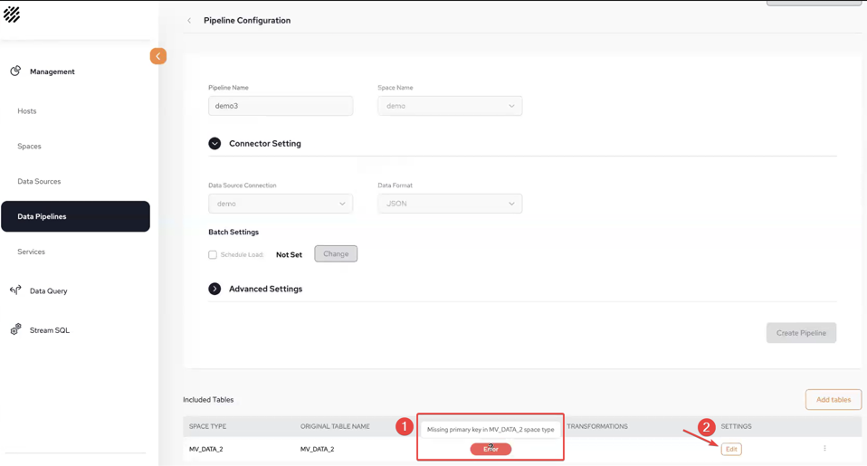
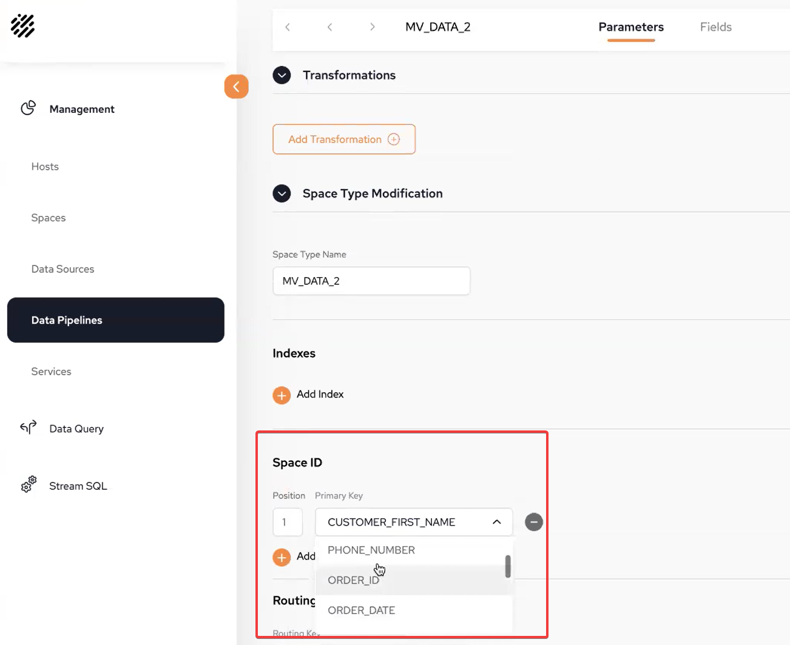

Data Pipelines allow a convenient, no-code method to pipe data from the System of Record to the GigaSpaces in-memory data grid.
A new data pipeline definition will include the definitions of the System of Record databases, tables and fields that will provide data to the pipeline. The definition also indicates the in-memory
Additional information includes optional validation rules and automatic conversion of specified field definitions.
From the Data Pipeline main screen, click Create New + to begin defining your first pipeline.

You can fill in some or all of the pipeline configuration items (shown below) from a
The configuration file may contains some or all of the required details. After the configuration details are loaded from the configuration file, they can be edited if desired, before saving .
Pipeline Name – The name assigned to the pipeline.
The Pipeline name is not case sensitive and has no limits for naming but must not exceed a length of 63 characters.
Space Name – The name of the GigaSpaces Space object that will receive the pipeline data. This is a mandatory field.
Connector Type – The data connector type, for example, IIDR. This is a mandatory field.
Connector Setting:
Data Source Connection – The data source from the System of Record. This is a URL and points to a database such as Oracle. This is a mandatory field.
It is possible to Create a new Data Source connection from here, if one has not already been created via the Data Sources menu. Follow the instructions from

Data Format - This is populated based on the Data Source Connection selected.
Once the Pipeline configuration has been completed, click Create Pipeline in order to move to the next stage of the configuration of including tables. In our example, we are creating a Pipeline which is connected to an Oracle DB but using Batchload.

The Pipeline Configuration screen is displayed:
1: Choose a Pipeline Name
2: Select a Space name (previously defined)
3. Select Data Source Connection (previously defined) or create one here. Refer to Data Source - Batch Load.
4. Under Batch Settings, select Schedule Load, then click Change.
5: After batch schedule load has been set, click Create Pipeline.

1: It is possible to schedule a Batch Load for the following: Hourly, Daily, Weekly or Custom.
2: If "First batch load will occur when the Pipeline is started" the batchload will begin when the Pipeline is started. Otherwise it will occur at the schedule batch loading time.
Care must be taken not to schedule a batch load AFTER the current time together with NOT selecting the option of "First batch load will occur when the Pipeline is started" or the data will not be loaded until the date defined, once the Pipeline has been started for the first time.
3. When all the batch loading has been scheduled, Click Apply.

STATUS: Besides Inactive, Running, Error and Warning there are new Statuses for Batchload: Completed and Warning.



1: In the Pipeline Configuration screen, click Add Tables
2: This is an example of selecting a materialized view table

1: There will be an error when you attempt to add a materialized view without first adding a Space ID.
2: Click Edit to add a Space ID.

In the Space ID section, select from the drop-down the Primary Key that you wish to use.
Click Apply
On the Pipeline Configuration screen, click Save.